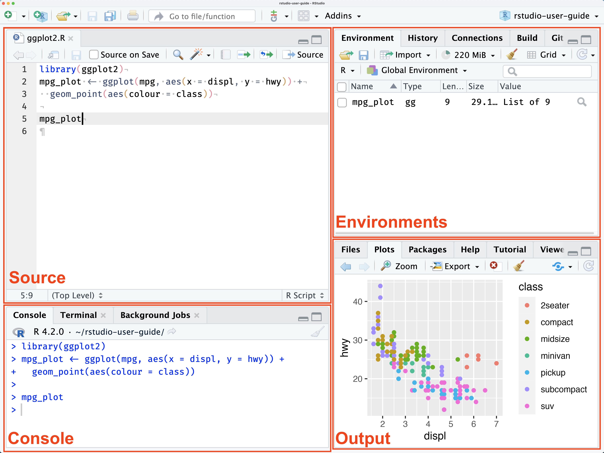
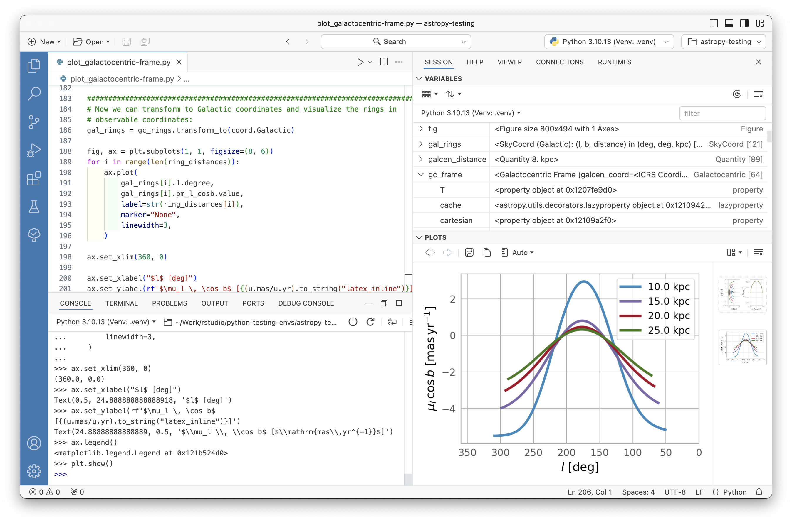

# Install the modelsummary package
install.packages("modelsummary")1 Introduction to R
1.1 What is R?
R is a high-level computer language and environment for statistics and econometrics. It is widely used for data analysis in academia and industry. It performs a variety of statistical techniques, produces high quality graphics, and enables writing custom functions for specific tasks. R is an open-source software, which means that it is free to use and distribute. It runs on Windows, macOS, and Linux.
1.2 How to install R
R is free and can be downloaded from the Comprehensive R Archive Network (CRAN) at https://cran.r-project.org/. The R Core Team, which consists of several volunteer developers, maintains and updates the software. The current R Core Team can be seen at Contributors.
1.3 A bit of history
R is based on the S programming language. The first version of S was developed at Bell Labs by John Chambers and others in the mid-1970s and was intended for data analysis and statistical modeling. Ross Ihaka and Robert Gentleman from the Department of Statistics at the University of Auckland created R as an open-source implementation of S in the early 1990s. The first version of R was released on February 29, 2000. Since then, R has grown in popularity and is now widely used in academia and industry for data analysis and statistical computing. The current version is Version 4.5.1 as of November 2025.
1.4 Packages
In addition to the base system, there are user-contributed add-on packages. In R, a package is a collection of functions, examples, and documentation developed for a specific task. On CRAN, there are more than 23,000 packages available (as of November 2025) that extend the functionality of R in various ways. This feature makes R a very powerful and flexible tool for data analysis.
The repository for R packages is CRAN. To install a package, you need to be connected to the internet and use the R command install.packages("name of package"). For example, you can install the modelsummary package by typing
To load package into our current session, we need to load the package by typing:
# Load the modelsummary package
library(modelsummary)
# or use
require(modelsummary)Once the package is loaded, you can use the functions and datasets provided by the package. For example, the modelsummary package provides a function called datasummary_skim that summarizes the main statistics of a dataset. In the following example, we will load the caschool dataset from a CSV file and use the datasummary_skim function to summarize the test scores and student-teacher ratio.
# Load the caschool dataset
caschool <- read.table("data/caschool.csv", header = TRUE, sep = ",")
# Column names of the dataset
colnames(caschool) [1] "Observation.Number" "dist_cod" "county"
[4] "district" "gr_span" "enrl_tot"
[7] "teachers" "calw_pct" "meal_pct"
[10] "computer" "testscr" "comp_stu"
[13] "expn_stu" "str" "avginc"
[16] "el_pct" "read_scr" "math_scr" # Load the modelsummary package
library(modelsummary)Warning: package 'modelsummary' was built under R version 4.5.2# Summary statistics of test scores and student teacher ratio
datasummary_skim(caschool[, c("testscr", "str")])| Unique | Missing Pct. | Mean | SD | Min | Median | Max | Histogram | |
|---|---|---|---|---|---|---|---|---|
| testscr | 379 | 0 | 654.2 | 19.1 | 605.6 | 654.4 | 706.8 | ![](data:image/png;base64,%20iVBORw0KGgoAAAANSUhEUgAABLAAAAGQCAMAAACJa2lsAAAABlBMVEUAAAD///+l2Z/dAAAN90lEQVR4nO3UgbEtoQ1Ewe/8k3YAl6q1i+UdYLsjAM1I//4DcIh/9QMA/lcOFnAMBws4hoMFHMPBAo7hYAHHcLCAYzhYwDEcLOAYDhZwDAcLOIaDBRzDwQKO4WCxiX9/ov4lcwTIJhwsngmQTThYPBMgm3CweCZANuFg8UyAbMLB4pkA2YSDxTMBsgkHi2cCZBMOFs8EyCYcLJ4JkE04WDwTIJtwsHgmQDbhYPFMgDz7m1vyJ+pRMkeAPKuvzIvqUTJHgDyrr8yL6lEyR4A8q6/Mi+pRMkeAPKuvzIvqUTJHgDyrr8yL6lEyR4A8q6/Mi+pRMkeAPKuvzIvqUTJHgDyrr8yL6lEyR4A8q6/Mi+pRMkeAPKuvzIvqUTJHgDyrr8yL6lEyR4A8q6/Mi+pRMkeAPKuvzIvqUTJHgDyrr8yL6lEyR4A8q6/Mi+pRMkeAPKuvzIvqUTJHgDyrr8yL6lEyR4A8q6/Mi+pRMkeAPKuvzIvqUTJHgDyrr8yL6lEyR4A8q6/Mi+pRMkeAPKuvzIvqUTJHgDyrr8yL6lEyR4A8q6/Mi+pRMkeAPKuvzIvqUTJHgDyrr8yL6lEyR4A8q6/Mi+pRMkeAPKuvzIvqUTJHgDyrr8yL6lEyR4A8q6/Mi+pRMkeAPKuvzIvqUTJHgDyrr8yL6lEyR4A8q6/Mi+pRMkeAPKuvzIvqUTJHgDyrr8yL6lEyR4A8q6/Mi+pRMkeAPKuvzIvqUTJHgDyrr8yL6lEyR4A8q6/Mi+pRMkeAPKuvzIvqUTJHgDyrr8yL6lEyR4A8q6/Mi+pRMkeAPKuvzIvqUTJHgDyrr8yL6lEyR4A8q6/Mi+pRMkeAPKuvzIvqUTJHgDyrr8yL6lEyR4A8q6/Mi+pRMkeAPKuvzIvqUTJHgDyrr8yL6lEyR4A8q6/Mi+pRMkeAPKuvzIvqUTJHgDyrr8yL6lEyR4A8q6/Mi+pRMkeAPKuvzIvqUTJHgDyrr8yL6lEyR4A8q6/Mi+pRMkeAPKuvzIvqUTJHgDyrr8yL6lEyR4A8q6/Mi+pRMkeAh6sPwGnqvJgjwMPVB+A0dV7MEeDh6gNwmjov5gjwcPUBOE2dF3MEeLj6AJymzos5AjxcfQBOU+fFHAEerj4Ap6nzYo4AD1cfgNPUeTFHgIerD8Bp6ryYI8DD1QfgNHVezBHg4eoDcJo6L+YI8HD1AThNnRdzBHi4+gCcps6LOQI8XH0ATlPnxRwBHq4+AKep82KOAA9XH4DT1HkxR4CHqw/Aaeq8mCPAw9UH4DR1XswR4Dr1bjJQl4I5Alyn3k0G6lIwR4Dr1LvJQF0K5ghwnXo3GahLwRwBrlPvJgN1KZgjwHXq3WSgLgVzBLhOvZsM1KVgjgDXqXeTgboUzBHgOvVuMlCXgjkCXKfeTQbqUjBHgOvUu8lAXQrmCHCdejcZqEvBHAGuU+8mA3UpmCPAderdZKAuBXMEuE69mwzUpWCOANepd5OBuhTMEeA69W4yUJeCOQJcp95NBupSMEeA69S7yUBdCuYIcJ16NxmoS8EcAa5T7yYDdSmYI8B16t1koC4FcwS4Tr2bDNSlYI4A16l3k4G6FMwR4Dr1bjJQl4I5Alyn3k0G6lIwR4Dr1LvJQF0K5ghwnXo3GahLwRwBrlPvJgN1KZgjwHXq3WSgLgVzBLhOvZsM1KVgjgDXqXeTgboUzBHgOvVuMlCXgjkCXKfeTQbqUjBHgOvUu8lAXQrmCHCdejcZqEvBHAGuU+8mA3UpmCPAderdZKAuBXMEuE69mwzUpWCOANepd5OBuhTMEeA69W4yUJeCOQJcp95NBupSMEeA69S7yUBdCuYIcJ16NxmoS8EcAa5T7yYDdSmYI8B16t1koC4FcwS4Tr2bDNSlYI4A16l3k4G6FMwR4Dr1bjJQl4I5Alyn3k0G6lIwR4Dr1LvJQF0K5ghwnXo3GahLwRwBrlPvJgN1KZgjwHXq3WSgLgVzBLhOvZsM1KVgjgDXqXeTgboUzBHgOvVuMlCXgjkCXKfeTQbqUjBHgOvUu8lAXQrmCHCdejcZqEvBHAGuU+8mA3UpmCPAderdZKAuBXMEuE69mwzUpWCOANepd5OBuhTMEeA69W4yUJeCOQJcp95NBupSMEeA69S7yUBdCuYIcJ16NxmoS8EcAa5T7yYDdSmYI8B16t1koC4FcwS4Tr2bDNSlYI4A16l3k4G6FMwR4Dr1bjJQl4I5Alyn3k0G6lIwR4Dr1LvJQF0K5ghwnXo3GahLwRwBrlPvJgN1KZgjwHXq3WSgLgVzBLhOvZsM1KVgjgDXqXeTgboUzBHgOvVuMlCXgjkCXKfeTQbqUjBHgOvUu8lAXQrmCHCdejcZqEvBHAGuU+8mA3UpmCPAderdZKAuBXMEuE69mwzUpWCOANepd5OBuhTMEeA69W4yUJeCOQJcp95NBupSMEeA69S7yUBdCuYIcJ16N6nUzbuY2a5Trw2VunkXM9t16rWhUjfvYma7Tr02VOrmXcxs16nXhkrdvIuZ7Tr12lCpm3cxs12nXhsqdfMuZrbr1GtDpW7excx2nXptqNTNu5jZrlOvDZW6eRcz23XqtaFSN+9iZrtOvTZU6uZdzGzXqdeGSt28i5ntOvXaUKmbdzGzXadeGyp18y5mtuvUa0Olbt7FzHadem2o1M27mNmuU68Nlbp5FzPbdeq1oVI372Jmu069NlTq5l3MbNep14ZK3byLme069dpQqZt3MbNdp14bKnXzLma269RrQ6Vu3sXMdp16bajUzbuY2a5Trw2VunkXM9t16rWhUjfvYma7Tr02VOrmXcxs16nXhkrdvIuZ7Tr12lCpm3cxs12nXhsqdfMuZrbr1GtDpW7excx2nXptqNTNu5jZrlOvDZW6eRcz23XqtaFSN+9iZrtOvTZU6uZdzGzXqdeGSt28i5ntOvXaUKmbdzGzXadeGyp18y5mtuvUa0Olbt7FzHadem2o1M27mNmuU68Nlbp5FzPbdeq1oVI372Jmu069NlTq5l3MbNep14ZK3byLme069dpQqZt3MbNdp14bKnXzLma269RrQ6Vu3sXMdp16bajUzbuY2a5Trw2VunkXM9t16rWhUjfvYma7Tr02VOrmXcxs16nXhkrdvIuZ7Tr12lCpm3cxs12nXhsqdfMuZrbr1GtDpW7excx2nXptqNTNu5jZrlOvDZW6eRcz23XqtaFSN+9iZrtOvTZU6uZdzGzXqdeGSt28i5ntOvXaUKmbdzGzXadeGyp18y5mtuvUa0Olbt7FzHadem2o1M27mNmuU68Nlbp5FzPbdeq1oVI372Jmu069NlTq5l3MbNep14ZK3byLme069dpQqZt3sY/Otm40V6vrfbGPzrZuNFer632xj862bjRXq+t9sY/Otm40V6vrfbGPzrZuNFer632xj862bjRXq+t9sY/Otm40V6vrfbGPzrZuNFer632xj862bjRXq+t9sY/Otm40V6vrfbGPzrZuNFer632xj862bjRXq+t9sY/Otm40V6vrfbGPzrZuNFer632xj862bjRXq+t9sY/Otm40V6vrfbGPzrZuNFer632xj862bjRXq+t9sY/Otm40V6vrfbGPzrZuNFer632xj862bjRXq+t9sY/Otm40V6vrfbGPzrZuNFer632xj862bjRXq+t9sY/Otm40V6vrfbGPzrZuNFer632xj862bjRXq+t9sY/Otm40V6vrfbGPzrZuNFer632xj862bjRXq+t9sY/Otm40V6vrfbGPzrZuNMyqd6jx1W/D4eodanz123C4eocaX/02HK7eocZXvw2Hq3eo8dVvw+HqHWp89dtwuHqHGl/9Nhyu3qHGV78Nh6t3qPHVb8Ph6h1qfPXbcLh6hxpf/TYcrt6hxle/DYerd6jx1W/D4eodanz123C4eocaX/02HK7eocZXvw2Hq3eo8dVvw+HqHWp89dtwuHqHGl/9Nhyu3qHGV78Nh6t3qPHVb8Ph6h1qfPXbcLh6hxpf/TYcrt6hxle/DYerd6jx1W/D4eodanz128CzelF/7PeiP1H3AI5QL+qP/V70J+oewBHqRf2x34v+RN0DOEK9qD/2e9GfqHsAR6gX9cd+L/oTdQ/gCPWi/tjvRX+i7gEcoV7UH/u96E/UPYAj1Iv6Y78X/Ym6B3CEelF/7PeiP1H3AI5QL+qP/V70J+oewBHqRf2x34v+RN0DOEK9qD/2e9GfqHsAR6gX9ceGLwI2UV+DHxu+CNhEfQ1+bPgiYBP1Nfix4YuATdTX4MeGLwI2UV+DHxu+CNhEfQ1+bPgiYBP1Nfix4YuATdTX4MeGLwI2UV+DHxu+CNhEfQ1+bPgiYBP1Nfix4YuATdTX4MeGLwI2UV+DHxu+CNhEfQ1+bPgiYBP1Nfix4YuATdTX4MeGLwI2UV+DHxu+CNhEfQ1+bPgiYBP1Nfix4YuATdTX4MeGLwI2UV+DHxu+CNhEfQ1+bPgiYBP1Nfix4YuATdTX4MeGLwI2UV+DHxu+CNhEfQ1+bPgiYBP1Nfix4YuATdTX4MeGLwI2UV+DHxu+CNhEfQ1+bPgiYBP1Nfix4YuATdTX4MeGLwI2UV+DHxu+CNhEfQ1+bPgiYBP1Nfjxf72onh5wHwcLOIaDBRzDwQKO4WABx3CwgGM4WMAxHCzgGA4WcAwHCziGgwUcw8ECjuFgAcdwsIBjLDtYACUHCziGgwUcw8ECjuFgAcdwsIBjOFjAMRws4BgOFnAMBws4hoMFHMPBAo7hYAHHcLCAY/wXvud6RYhjISEAAAAASUVORK5CYII=) |
| str | 412 | 0 | 19.6 | 1.9 | 14.0 | 19.7 | 25.8 | ![](data:image/png;base64,%20iVBORw0KGgoAAAANSUhEUgAABLAAAAGQCAMAAACJa2lsAAAABlBMVEUAAAD///+l2Z/dAAANcElEQVR4nO3UUbLsQI5jwZr9b7rN8n/CuiXdd4JF9xVIARD/+X8AQ/yn/gCA/y2DBYxhsIAxDBYwhsECxjBYwBgGCxjDYAFjGCxgDIMFjGGwgDEMFjCGwQLGMFh7/ecv1T/HfyfF2stgMY5i7WWwGEex9jJYjKNYexksxlGsvQwW4yjWXgaLcRRrL4PFOIq1l8FiHMXay2AxjmLtZbAYR7H2MliMo1h7GSzGUay9DBbjKNZeBotxFGsvg8U4irWXwWIcxdrLYDGOYu1lsBhHsfYyWIyjWHsZLMZRrL0MFuMo1l4Gi3EUay+DxTiKtZfBYhzF2stgMY5i7WWwGEex9jJYjKNYexksxlGsvQwW4yjWXgaLcRRrL4PFOIq1l8FiHMXay2AxjmLtZbAYR7H2MliMo1h7GSzGUay9DBbjKNZeBotxFGsvg8U4irWXwWIcxdrLYDGOYu1lsBhHsfYyWIyjWHsZLMZRrL0MFuMo1l4Gi3EUay+DxTiKtZfBYhzF2stgMY5i7WWwGEex9jJYjKNYexksxlGsvQwW4yjWXgaLcRRrL4PFOIq1l8FiHMXay2AxjmLtZbAYR7H2MliMo1h7GSzGUay9DBbjKNZeBotxFGsvg8U4irXXnw7Wn6pfjozs96pn57n65cjIfq96dp6rX46M7PeqZ+e5+uXIyH6venaeq1+OjOz3qmfnufrlyMh+r3p2nqtfjozs96pn57n65cjIfq96dp6rX46M7PeqZ+e5+uXIyH6venaeq1+OjOz3qmfnufrlyMh+r3p2nqtfjozs96pn57n65cjIfq96dp6rX46M7PeqZ+e5+uXIyH6venaeq1+OjOz3qmfnufrlyMh+r3p2nqtfjozs96pn57n65cjIfq96dp6rX46M7PeqZ+e5+uXIyH6venaeq1+OjOz3qmfnufrlyMh+r3p2nqtfjozs96pn57n65cjIfq96dp6rX46M7PeqZ+e5+uXIyH6venaeq1+OjOz3qmfnufrlyMh+r3p2nqtfjozs96pn57n65cjIfq96dp6rX46M7PeqZ+e5+uXIyH6venaeq1+OjOz3qmfnufrlyMh+r3p2nqtfjozs96pn57n65cjIfq96dp6rX46M7PeqZ+e5+uXIyH6venaeq1+OjOz3qmfnufrlyMh+r3p2nqtfjozs96pn57n65cjIfq96dp6rX46M7PeqZ+e5+uXIyH6venaeq1+OjOz3qmfnufrlyMh+r3p2nqtfjozs96pn57n65cjIfq96dp6rX46M7PeqZ+e5+uXIyH6venaeq1+OjOz3qmfnufrlyMh+r3p2nqtfjozs96pn57n65cjIfq96dp6rX46M7PeqZ+e5+uXIyH6venaeq1+OjOz3qmfnufrlyMh+r3p2nqtfjozs96pn57n65cjIfq96dp6rX46M7PeqZ+e5+uXIyH6venaeq1+OjOz3qmfnufrlyMh+r3p2nqtfjozs96pn57n65cjIfq96dp6rX46M7PeqZ+e5+uXIyH6venaeq1+OjOz3qmfnufrlyMh+r3p2nqtfjozs96pn57n65cjIfq96dp6rX46M7PeqZ+e5+uXIyH6venaeq1+OjOz3qmfnufrlyMh+r3p2nqtfjozs96pn57n65cjIfq96dp6rX46M7PeqZ+e5+uXIyP5q9TJcqo6FjOyvVi/DpepYyMj+avUyXKqOhYzsr1Yvw6XqWMjI/mr1MlyqjoWM7K9WL8Ol6ljIyP5q9TJcqo6FjOyvVi/DpepYyMj+avUyXKqOhYzsr1Yvw6XqWMjI/mr1MlyqjoWM7K9WL8Ol6ljIyP5q9TJcqo6FjOyvVi/DpepYyMj+avUyXKqOhYzsr1Yvw6XqWMjI/mr1MlyqjoWM7K9WL8Ol6ljIyP5q9TJcqo6FjOyvVi/DpepYyMj+avUyXKqOhYzsr1Yvw6XqWMjI/mr1MlyqjoWM7K9WL8Ol6ljIyP5q9TJcqo6FjOyvVi/DpepYyMj+avUyXKqOhYzsr1Yvw6XqWMjI/mr1MlyqjoWM7K9WL8Ol6ljIyP5q9TJcqo6FjOyvVi/DpepYyMj+avUybFRnzol4rlYf70Z15pyI52r18W5UZ86JeK5WH+9GdeaciOdq9fFuVGfOiXiuVh/vRnXmnIjnavXxblRnzol4rlYf70Z15pyI52r18W5UZ86JeK5WH+9GdeaciOdq9fFuVGfOiXiuVh/vRnXmnIjnavXxblRnzol4rlYf70Z15pyI52r18W5UZ86JeK5WH+9GdeaciOdq9fFuVGfOiXiuVh/vRnXmnIjnavXxblRnzol4rlYf70Z15pyI52r18W5UZ86JeK5WH+9GdeaciOdq9fFuVGfOiXiuVh/vRnXmnIjnavXxblRnzol4rlYf70Z15pyI52r18W5UZ86JeK5WH+9GdeaciOdq9fFuVGfOiXiuVh/vRnXmnIjnavXxblRnzol4rlYf70Z15pyI52r18W5UZ86JeK5WH+9GdeaciOdq9fFuVGfOiXiuVh/vRnXmnIjnavXxblRnzol4rlYf70Z15pyI52r18W5UZ86JeK5WH+9GdeaciOdq9fFuVGfOiXiuVh/vRnXmnIjnavXxblRnzol4rlYf70Z15pyI52r18W5UZ86JeK5WH+9GdeaciOdq9fFuVGfOiXiuVh/vRnXmnIjnavXxblRnzol4rlYf70Z15pyI57X6wPhW3SdOxPNafWB8q+4TJ+J5rT4wvlX3iRPxvFYfGN+q+8SJeF6rD4xv1X3iRDyv1QfGt+o+cSKe1+oD41t1nzgRz2v1gfGtuk+ciOe1+sD4Vt0nTsTzWn1gfKvuEyfiea0+ML5V94kT8bxWHxjfqvvEiXheqw+Mb9V94kQ8r9UHxrfqPnEintfqA+NbdZ84Ec9r9YHxrbpPnIjntfrA+FbdJ07E81p9YHyr7hMn4nmtPjC+VfeJE/G8Vh8Y36r7xIl4XqsPjG/VfeJEPK/VB8a36j5xIp7X6gPjW3WfOBHPa/WB8a26T5yI57X6wPhW3SdOxPNafWB8q+4TJ+J5rT4wvlX3iRPxvFYfGN+q+8SJeF6rD4xv1X3iRDyv1QfGt+o+cSKe1+oD41t1nzgRz2v1gfGtuk+ciOe1+sD4Vt0nTsTzWn1gfKvuEyfiea0+ML5V94kT8bxWHxjfqvvEiXheqw+Mb9V94kQ8r9UHxrfqPnEintfqA+NbdZ84Ec9r9YHxrbpPnIjntfrA+FbdJ07E81p9YHyr7hMn4nmtPjC+VfeJE/G8Vh8Y36r7xIl4XqsPjG/VfeJEPK/VB8a36j5xIp7X6gPjW3WfOBHPa/WB8a26T5yI57X6wPhW3SdOxPNafWB8q+4TJ+J5rT4wvlX3iRPxvFYfGN+q+8SJeF6rD4xv1X3iRDyv1QfGt+o+cSKe1+oD41t1nzgRz2v1gfGtuk+ciOe1+sD4Vt0nTsTzWn1gfKvuEyfiea0+ML5V94kT8bxWHxjfqvvEiXheqw+Mb9V94kQ8r9UHxhx1V+fzhK/VR8AcdVfn84Sv1UfAHHVX5/OEr9VHwBx1V+fzhK/VR8AcdVfn84Sv1UfAHHVX5/OEr9VHwBx1V+fb8YR1T+GnPoT5djxh3VP4qQ9hvh1PWPcUfupDmG/HE9Y9hZ/6EObb8YR1T+GnPoT5djxh3VP4qQ9hvh1PWPcUfupDmG/HE9Y9hZ/6EObb8YR1T+GnPoT5djxh3VP4qQ9hvh1PWPcUfupDmG/HE9Y9hZ/6EObb8YR1T+GnPoT5djxh3VP4qQ9hvh1PWPcUfupDmG/HE9Y9hZ/6EObb8YR1T+GnPoT5djxh3VP4qQ9hvh1PWPcUfupDmG/HE9Y9hZ/6EObb8YR1T+GnPoT5djxh3VP4qQ9hvh1PWPcUfupDmG/HE9Y9hZ/6EObb8YR1T+GnPoT5djxh3VP4qQ9hvh1PWPcUfupDmG/HE9Y9hZ/6EObb8YR1T+GnPoT5djxh3VP4qQ9hvh1PWPcUfupDmG/HE9Y9hZ/6EObb8YR1T+GnPoT5djxh3VP4qQ9hvh1PWPcUfupDmG/HE9Y9hZ/6EOa75wnrLsGfq49svnuesO4S/Ln6yOa75wnrLsGfq49svnuesO4S/Ln6yOa75wnrLsGfq49svnuesO4S/Ln6yOa75wnrLsGfq49svnuesO4S/Ln6yOa75wnrLsGfq49svnuesO4S/Ln6yOa75wnrLsFs9QX/E/f8ZR03zFZf8D9xz1/WccNs9QX/E/f8ZR03zFZf8D9xz1/WccNs9QX/E/f8ZR03zFZf8D9xz1/WccNs9QX/E/f8ZR03zFZf8D9xz1/WccNs9QX/E/f8ZR03zFZf8D9xz1/WccNs9QX/E/f8ZR03zFZf8D9xz1/WccNs9QX/E/f8ZR03zFZf8D/xf/rLOhHg/+uvNuIqBgv+O/zVRlzFYMF/h7/aiKsYLPjv8FcbcRWDBaQMFjCGwQLGMFjAGAYLGMNgAWMYLGAMgwWMYbCAMQwWMIbBAsYwWMAYfzZYACWDBYxhsIAxDBYwhsECxjBYwBgGCxjDYAFjGCxgDIMFjGGwgDEMFjCGwQLGMFjAGP8D0aQuvttzaNAAAAAASUVORK5CYII=) |
To see all available functions in a package, you can use the help(package = "name of package") command. For example, to see all functions in the modelsummary package, you can type:
# To see all functions in the modelsummary package
help(package = "modelsummary")1.5 Integrated Development Environments (IDEs)
After installing R, you may want to install an Integrated Development Environment (IDE) to make coding easier. The most popular IDE for R is RStudio, which is free and available for Windows, macOS, and Linux. Figure 1.1 shows the layout of RStudio with its four main panes: Source, Console, Environment/History, and Files/Plots/Packages/Help. The most important panes are the source and console panes. The source pane allows users to view and edit various code-related files. The R console is where computations are performed.

Another recently developed IDE by Posit is Positron. Positron is a next-generation IDE for data science and scientific computing. It supports multiple languages including R, Python, Julia, and others. Figure 1.2 shows the layout of Positron IDE with its various panes similar to RStudio but with additional features for multi-language support.

1.6 R as a calculator
You can use R as a calculator by typing mathematical expressions directly into the console. In Table 1.1, we summarize some basic binary, math, trigonometric, and rounding functions available in R.
| Category | 1 | 2 | 3 | 4 | 5 | 6 |
|---|---|---|---|---|---|---|
| Binary Operations | + |
- |
* |
/ |
^ |
%% |
| Math Functions | abs |
sqrt |
log |
exp |
log10 |
factorial |
| Trig Functions | sin |
cos |
tan |
asin |
acos |
atan |
| Rounding | round |
ceiling |
floor |
trunc |
signif |
zapsmall |
| Math Quantities | Inf |
-Inf |
NaN |
pi |
exp(1) |
1i |
The binary operators are +: addition,-: subtraction, *: multiplication, ^: exponentiation, and %% is for modular arithmetic (i.e., remainder after division). Some math quantities include Inf: positive infinity, -Inf: negative infinity, NaN: not a number, pi: the mathematical constant \(\pi\), exp(1): Euler’s number \(e\), and 1i: imaginary unit.
Here are some examples of using R as a calculator:
# Basic arithmetic operations
3 + 5[1] 85%%4 # remainder of 5 divided by 4[1] 12^3 # 2 raised to the power of 3[1] 8log(2) # natural logarithm of 2[1] 0.6931472exp(1) # e raised to the power of 1[1] 2.718282ceiling(3.2) # smallest integer greater than 3.2[1] 4# Examples of special quantities
1/0 # positive infinity (Inf)[1] Inf0/0 # not a number (NaN)[1] NaN1/Inf # 0[1] 0Inf - Inf # not a number (NaN)[1] NaNNaN + 1 # not a number (NaN)[1] NaNIn Table 1.2, we provide some useful mathematical functions available in R.
| Function | Description |
|---|---|
log(x) |
log to base \(e\) of \(x\) |
exp(x) |
inverse of \(\ln(x)\) or \(e^x\) |
log(x, n) |
\(\log\) to base \(n\) of \(x\) |
log10(x) |
\(\log\) to base \(10\) of \(x\) |
sqrt(x) |
square root of \(x\) |
abs(x) |
the absolute value of \(x\) |
factorial(x) |
\(x! = x\times(x-1)\times(x-2)\times\cdots\times2\times1\) |
choose(n, x) |
binomial coefficient \(n!/(x!(n-x)!)\) |
gamma(x) |
\(\Gamma(x)\); for integer \(x\), equals \((x-1)!\) |
lgamma(x) |
\(\ln(\Gamma(x))\) |
floor(x) |
greatest integer less than \(x\) |
ceiling(x) |
smallest integer greater than \(x\) |
trunc(x) |
closest integer to \(0\) between \(x\) and \(0\) |
round(x, digits = a) |
round \(x\) to \(a\) decimal places |
signif(x, digits = b) |
give \(x\) to \(b\) digits |
runif(n) |
generates \(n\) random numbers between \(0\) and \(1\) from a uniform distribution |
cos(x) |
cosine of \(x\) in radians |
sin(x) |
sine of \(x\) in radians |
tan(x) |
tangent of \(x\) in radians |
acos(x), asin(x), atan(x)
|
inverse trigonometric transformations |
acosh(x), asinh(x), atanh(x)
|
inverse hyperbolic trigonometric transformations |
1.7 Objects and Functions
When using R, we usually create objects and perform functions on those objects. In R, everything is an object and each object has a specific class (or type) that determines how it behaves and what operations can be performed on it.
The assignment operator in R is <- or = which is used to assign an object a name x using either x <- object or x = object. Note that object -> x is equivalent to x <- object.
Each built-in function has a set of formal arguments some with default values. These can be found in the function’s documentation. Note that R is case sensitive. Suppose that we want to find the mean of a set of numbers. We will put these numbers in a container type called vector. We first assign this vector a name x and then call the function mean.
Suppose that we want to create a function named mysd that computes the standard deviation of a given vector of numbers. We can use the key-word function to create new functions in R.
1.8 Documentation
To look at the documentation for a specific function from a loaded package, use ?function_name or help("function_name"). Also, in RStudio, there is a pane for help on the right where we can search for the relevant topic or package name.
# Help document on the mean function
?mean
help("mean")To get help documentation on an installed package use help(package="package name"). This command will also return a complete list of functions contained in the package.
# Help document on the stats package
help(package="stats")The base system and some packages also include demos. To see a complete list of demos in the base system, type demo() in the console. To run a particular demo, use demo("topic"). Some packages include a vignette, which is a file containing additional documentation and examples. To list all vignettes from all installed packages, use vignette(). To access a specific vignette, use vignette("name_of_vignette").
1.9 Working Directory and Workspace
When we load, save datasets, or save graphs, we need to specify the file path. To avoid typing the path each time, we can set a working directory. To do this in Rstudio, click Session > Set Working Directory > Choose Directory. You can also use setwd(file_path) to set the working directory. To view the current directory, use getwd().
# To see the current working directory
getwd()# Setting the working directory
setwd("C:/Users/YourName/Documents/RProjects")In RStudio, the Environment pane is where all the objects you create during a session are stored. In Positron, the SESSION pane serves a similar purpose. The following functions are useful for managing the workspace.
-
ls(): Lists all objects in the current workspace. -
rm(): Removes objects from the workspace. -
save(): Saves specified objects to a file. -
load(): Loads objects from a file into the workspace. -
list(): Lists all files in the current working directory. -
search(): Shows the currently loaded packages. -
library(): Shows all installed packages. -
rm(object names): Removes an object by its name. -
rm(list=ls()): Removes all objects from the workspace.